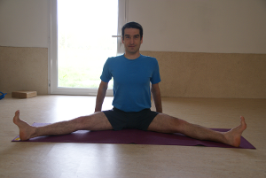
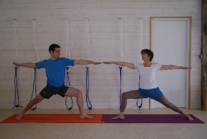
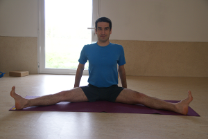
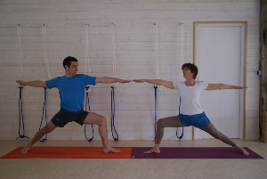

Espace Yoga du Richelieu
Paulette et Stéphane vous proposent des cours de yoga de type Iyengar.
Les asanas ou postures aident à soulager les maux de dos, tensions ou problèmes articulaires.
Le yoga Iyengar améliore aussi la concentration et la respiration, ouvrant les portes à un esprit plus serein.
Adresse : 1 rue du Richelieu 44118 LA CHEVROLIERE
Renseignements : Paulette : 02 53 55 82 24 - Stéphane : 06 38 43 29 02
 
